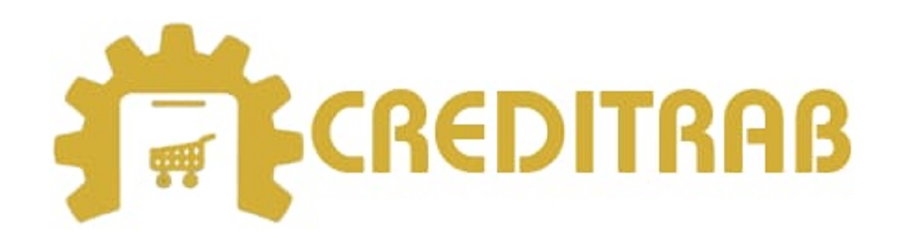

Ideas y Soluciones para el Trabajador
En CREDITRAB, ofrecemos soluciones financieras innovadoras que permiten a trabajadores (emprendedores o comerciantes) poder vender sus productos y/o servicios al crédito. Nos especializamos en tecnología financiera (FinTech) enfocada en el bienestar social y laboral. Nuestro principal propósito es apoyar al pequeño emprendedor y pequeños comercios, facilitándoles una plataforma digital que les dará acceso a un nicho de mercado único y seguro, como lo son los trabajadores o empleados de empresas que estén afiliadas a nuestra RED PATRONAL. Los empleados de estas empresas también se beneficiarán de CREDITRAB, ya que tendrán acceso sin costo alguno a esta RED de POS VIRTUALES, donde podrán realizar compras al crédito de productos de primera necesidad y todo aquel producto o servicio que los emprendedores ofrezcan.
Ofrecemos plataformas de venta digital que permiten a comercios aceptar pagos sin necesidad de hardware físico. Nuestra solución es rápida, segura y diseñada para pequeños negocios. Control total desde una app móvil.
Afiliación de VPOSProporcionamos tarjetas digitales para compras al crédito, ideales para trabajadores que requieren cubrir necesidades básicas o que no tienen acceso bancario tradicional. Control total desde una app móvil.
Afiliación PatronosNuestro sistema permite a los empleados de una empresa afiliada realizar compras presenciales o remotas al crédito, con pagos quincenales o mensuales. Todo basado en tokens de código QR. El monto se descontará directamente de la planilla de pago, lo que garantiza seguridad tanto para el comercio como para el cliente.
Gracias a nuestra plataforma móvil, todo el proceso se gestiona desde la palma de tu mano.
¿Te interesa colaborar con nosotros o usar nuestros servicios? Escríbenos a contacto@creditrab.com y con gusto te responderemos.